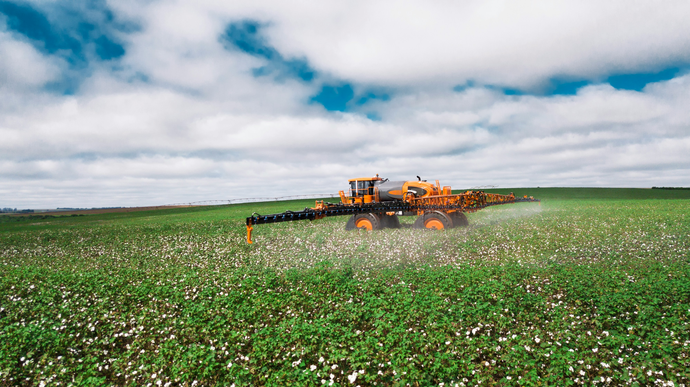

O uso de agrotóxicos continua sendo um dos temas mais discutidos no agronegócio. Embora esses produtos auxiliem no controle de pragas e no aumento da produtividade, seu uso excessivo pode causar impactos ao meio ambiente, à biodiversidade e à saúde humana.
O PROBLEMA
Os agrotóxicos são amplamente utilizados para proteger plantações contra insetos, fungos e ervas daninhas. No entanto, quando aplicados de forma inadequada ou em excesso, podem contaminar o solo, os rios e os lençóis freáticos, além de afetar organismos importantes para o equilíbrio dos ecossistemas, como abelhas e outros polinizadores..
Pesquisadores também alertam que a exposição frequente a determinadas substâncias pode representar riscos à saúde de trabalhadores rurais e comunidades próximas às áreas de cultivo.

AS ALTERNATIVAS
Para reduzir esses impactos, produtores rurais têm investido em métodos mais sustentáveis de controle de pragas. Entre as principais alternativas estão o controle biológico, que utiliza inimigos naturais dos insetos, a rotação de culturas, o manejo integrado de pragas e o uso de bioinsumos produzidos a partir de organismos naturais.
Essas práticas ajudam a diminuir a dependência de produtos químicos, preservam os recursos naturais e contribuem para uma produção agrícola mais equilibrada.

CONCLUSÃO
Especialistas afirmam que o futuro do agronegócio depende da combinação entre produtividade e sustentabilidade. O uso consciente de defensivos agrícolas, aliado a tecnologias ecológicas, pode garantir a produção de alimentos em larga escala sem comprometer a saúde das pessoas e do meio ambiente.
"O futuro da agricultura não depende apenas de produzir mais, mas de produzir melhor. As alternativas biológicas mostram que é possível proteger as lavouras e o meio ambiente ao mesmo tempo."
— Especialista em Agricultura Sustentável, 2023América do Sul como Referência Mundial
A crescente adoção de bioinsumos, controle biológico e práticas sustentáveis tem colocado a América do Sul em destaque no cenário agrícola internacional. A região demonstra que é possível reduzir a dependência de agrotóxicos, aumentar a produtividade e preservar os recursos naturais, tornando-se uma referência mundial em agricultura sustentável..